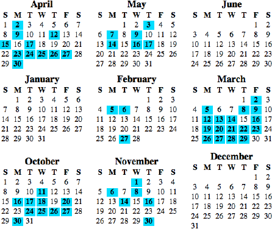

05.23.07
Car or Bike?
Bike to work yesterday during rush hour: 14 minutes
Drive to work today during rush hour: 12 minutes
In fairness, though, the car time outside of rush hour is probably closer to six minutes.
Permalink Comments off
Keepin’ static like wool fabric since 2006
Bike to work yesterday during rush hour: 14 minutes
Drive to work today during rush hour: 12 minutes
In fairness, though, the car time outside of rush hour is probably closer to six minutes.
Permalink Comments off
Today was Bike to Work Day in the San Francisco Bay Area. I celebrated appropriately, along with many, many other Googlers. My commute is about 10-15 minutes by bike. It’s almost respectable, but nothing compared to the 45-mile San Francisco to Mountain View commute that a surprising number of people undertook.
There were some fun activities organized around the day. The coolest: I got to ride a brand-new Conference Bike, a seven-seated, three-wheeled beast of a bicycle. There were also free chair massages. I heard Larry’s unmistakable, gravelly voice during mine, so at least one of our founders participated. I can only assume that Sergey was still on his honeymoon.
Google has a program to encourage self-powered commuting. The company makes a donation to a charity of my choice each day I bike in. So how have I been doing?

I made the commute 16 times in Q4 before the winter cold set in. I remember that November 30 bike ride pretty vividly. It was freezing cold, dark, and I didn’t have a long-sleeve shirt. Brrrrrrr.. it was enough to keep me off my bike for another two months. I hit 20 in Q1, thanks to a surge in March. My goal is 40 this quarter. I’m at 17 as of today, hopefully 18 by tomorrow. That’s a little off-pace, but it’s definitely doable. I’ll need to bike in 3/5 days two weeks and 4/5 days four more weeks to make it. That’ll be tough.
The main thing reason I don’t bike in every single day is racquetball. If I’m going to be playing in the afternoon or early evening, it just doesn’t make sense to bike in, bike back home, drive to the racquetball club and back.
And speaking of racquetball, I’ll hopefully have some hardware to show off in a forthcoming blog post…
Permalink Comments off
A friendly welcome to the world to my new nephew, Jasper Vanderkam Conway! He was born 2:15 AM on May 16th, and weighed in at 7 pounds 8 ounces.
Let’s see that face!
Baby and mommy
And Daddy
Long ago, Bob Dylan wrote about seeing “a newborn baby with wild wolves all around it.” Things look turbulent with mom in that picture, but he looks pretty happy and doll-like with Daddy. Wolves? I think he’ll be OK with those two. I’ll get a chance to meet little Jasper the weekend of July 4 when I visit the fam in New Jersey.
The final score of my win in the Supreme Court Low-C’s racquetball championship. I even get a trophy! Next up: high C’s.
You can always tell how good a racquetball player is by how they respond to “what level are you?” If they say “medium” or “intermediate” or “pretty good”, it means they’re not that great. Good players will answer with A, B, C or D, with A being the best. Tennis has Permalink Comments off
After the wallet-losing debacle, I’ve been slowly replacing all my lost cards. Today was a good day. My replacement debit card arrived in the mail this morning. It’s never felt quite so good to pay for gas with a credit card, even at a ludicrous $3.479/gal.
My team at Google had having an off-site involving Go Karts this afternoon, so I took the morning and went to the DMV to replace my license. I’m incredibly impressed with the Santa Clara DMV. Lines move swiftly, and I had my replacement license within an hour. It’s a zero hassle process. Fill out a form, write a check for $21, and you’re good to go.
Driver’s License and debit card are the biggies. All that’s left now are random library cards, and there’s no rush there.
Permalink Comments off
« Previous Page — « Previous entries Next entries » — Next Page »